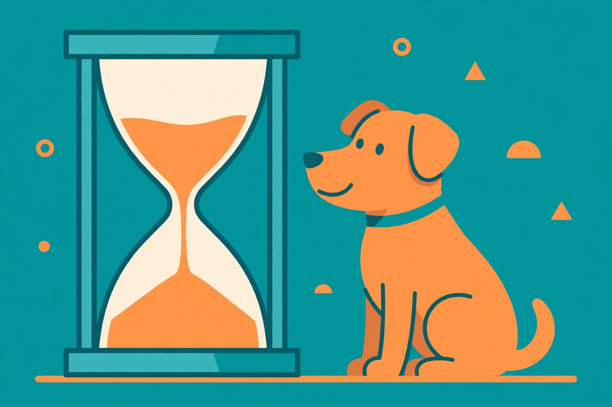

Pet Insurance Waiting Periods: When Each Coverage Type Actually Starts

A waiting period is the stretch between your policy's start date and when coverage actually begins. During that window, conditions your pet develops won't be covered — and worse, anything documented during it can be classified as pre-existing for the life of the policy. Waiting periods exist for two reasons: to stop people buying coverage after their pet is already sick (fraud prevention), and to give insurers a clean baseline for your pet's health (pre-existing-condition screening).
The three timelines, side by side
Different kinds of health issues carry different waits. Here is what the industry typically looks like — and how major providers compare:
| Coverage type | Typical wait | Industry range |
|---|---|---|
| Accidents & injuries | 0–14 days | Next-day to 15 days |
| Illnesses | 14 days | 14–30 days |
| Orthopedic / cruciate ligament | 6 months | 6–12 months |
| Provider | Accident | Illness | Orthopedic |
|---|---|---|---|
| Spot | 14 days* | 14 days | 14 days |
| Lemonade | 0 days | 14 days | 6 months |
| Embrace | 0 days | 14 days | 6 months |
| MetLife | 0 days | 14 days | 6 months |
| Pumpkin | ~15 days | ||
| Fetch | 15 days | 15 days | 6 months (knees waivable with exam) |
| Healthy Paws | 15 days | 15 days | 12 months |
| Trupanion | 5 days | 30 days | 30 days |
*Spot offers next-day accident coverage in select states. Terms vary by provider and location — confirm your own policy's numbers.
Orthopedic waits are the longest because those conditions develop slowly, are common in certain breeds (large dogs especially), and treatments are expensive — hip surgery alone can run $1,200 to $6,000+. Some providers let you shorten the orthopedic wait: Fetch, Figo, and Prudent Pet waive their 6-month orthopedic waiting period if your pet passes a veterinary exam shortly after enrollment (Fetch's waiver covers knees, not hips).
The trap inside the window
Here is the part that burns people. When you file a claim, the insurer reviews your pet's veterinary medical history — and any symptom documented during the waiting period can become a permanent exclusion. Classic example: your dog shows signs of limping during the 14-day waiting period and is later diagnosed with hip dysplasia. That condition is now classified as pre-existing and is never covered.
Orthopedic conditions carry a second sting: they are often bilateral, meaning likely to appear on both sides of the body. If the left knee was pre-existing, the right knee typically won't be covered either. Some insurers soften the rule for curable conditions — Spot, for instance, may cover a cured condition after 180 days without symptoms or treatment — but knee and ligament conditions usually remain permanently excluded once they appear in the window.
Your waiting-window checklist
Do this between signup and the day full coverage kicks in:
- Mark the exact dates. Note when each waiting period ends — accident, illness, orthopedic — so you know precisely when you're fully protected.
- Schedule a wellness exam early. A vet visit near enrollment establishes a documented health baseline, which helps prove that anything appearing after coverage begins isn't pre-existing.
- Ask about exam waivers. If you enrolled with a provider that waives the orthopedic wait after a vet exam, book it now — don't let the waiver sit unused.
- Keep routine care current. Vaccinations and checkups during the window keep the policy in good standing and create the clean medical record you want.
- Budget for the gap. Anything that happens during the window comes out of your pocket. A small emergency fund for these two weeks to six months is the realistic move.
What success looks like: you reach the end of each waiting period with a clean vet record, no undocumented symptoms, and full coverage active. That clean record is worth real money later.
Waivers, renewals, and switching
Three fine-print points worth knowing. First, wellness and preventive-care add-ons usually start immediately or within a few days — waiting periods apply to accident and illness coverage. Second, renewing with the same insurer generally does not restart waiting periods; they apply once, at the start. Third, switching providers resets the clock: move from Insurer A to Insurer B after three claim-free years, and you serve fresh waiting periods — including a new orthopedic wait. Once you've waited out a long orthopedic period with one carrier, switching becomes genuinely costly.
Ready for the next piece? See how pet insurance works, or what pet insurance covers — and what it doesn't.